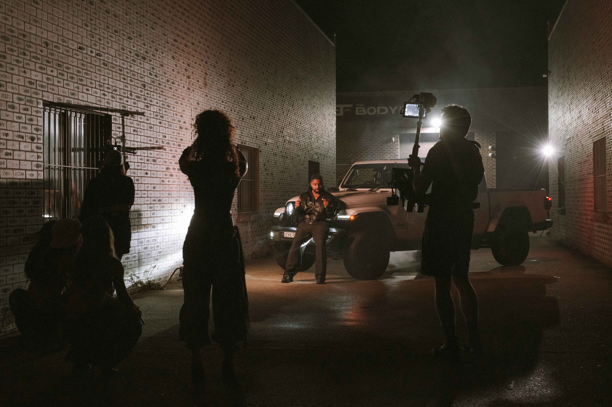
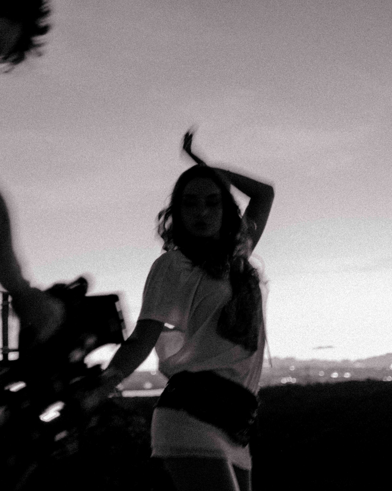
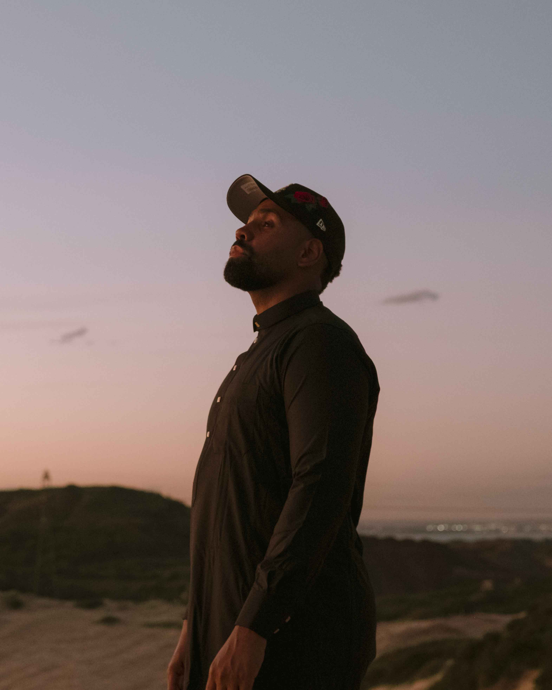
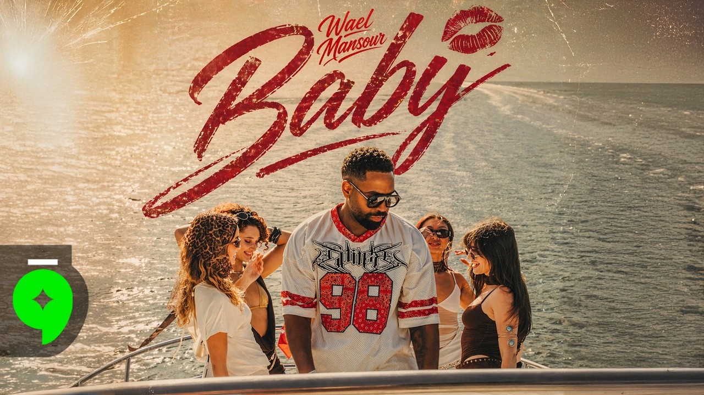

Wael Mansour - Baby
(2026)
Behind the scenes and press photos of Wael Mansour's single Baby.
Director: Olivia Tremul
Scope: BTS, Press Photography








Behind the scenes and press photos of Wael Mansour's single Baby.
Director: Olivia Tremul
Scope: BTS, Press Photography


